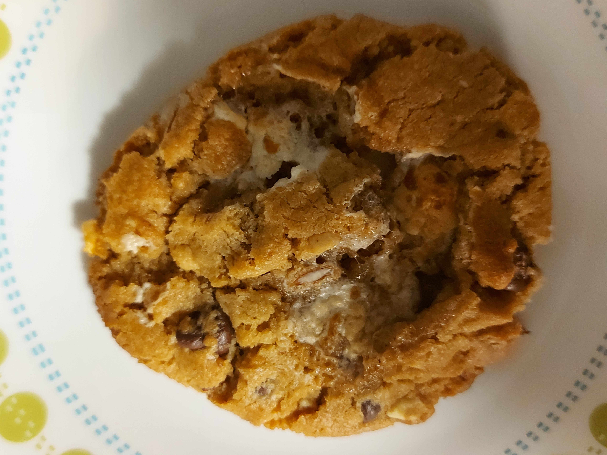

Gaelan Gunning
Quality Assurance Coach, Food Enthusiast, and Beardo
My Loaded Peanut Butter Cookies

Ingredients
- 1 cup unsalted butter
- 1 cup crunchy peanut butter
- 1 cup white suger
- 1 cup packed brown suger
- 2 large eggs
- 1 teaspoon vanilla extract (optional)
- 2 1/2 cups all purpose flour
- 1/2 teaspoon salt
- 1 teaspoon baking powder
- 1 1/2 teaspoons baking soda
- 1 cup mini marshmallows chilled in freezer for at least an hour
- 1 cup semi sweet chocolate chips
- 1/2 cup slivered almonds (optional)
Directions
- Step 1
Combine the butter, peanut butter, brown and white sugers together in a bowl and cream them together. Once the ingredients are combined and smooth beat in the eggs and vanilla - Step 2
Take a separate bowl and sift the flour, baking powder, baking soda, and salt. Then stir the dry ingredients into the butter mixture. - Step 3
Once the dry ingredients and butter mixture are well combined fold in the frozen marshmallows, chocolate chips, and sliced almonds (optional) being careful not to over work the dough; Once the the dough is formed place the dough in the refrigerator for at least 1 hour - Step 3
Roll your chilled dough into 1 inch balls and place them on a baking sheet. Using a fork flatten each ball making a checker pattern. Then bake the cookies in an oven that has been preheated to 375 degrees for about 10 minutes or until the cookies reach your desired texture
My Creative Process
I love cooking because because there are so many different ingredients to experiment with and a massive library of existing
recipes that you can use as a foundation to help you establish your own recipes.